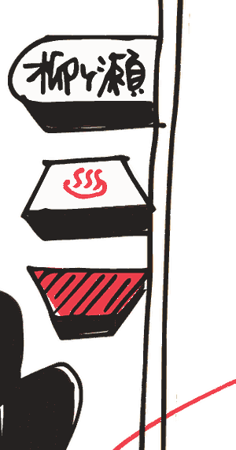
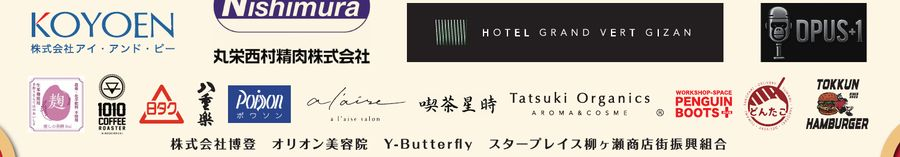

色々あって西柳ヶ瀬 そんな歴史のある街。 夜だけの街じゃない、 暮らすように集まろう。
第1回、昼の西柳ヶ瀬で
About最近はなかなか歩く機会がない、という方もいるかもしれない「西柳ヶ瀬アーケード」。その昼間に、第1回「西柳ヶ瀬ストリートマーケット」を開催します。
コーヒーやフード、スイーツ、野菜などのおいしいものから、古着、雑貨、クラフト、ワークショップ、リラクゼーション、占いまで。個性豊かな出店者が、西柳ヶ瀬に集まります。
おいしいものを食べたり、気になるものを見つけたり、体験したり、占ってもらったり。そして、どこからか聞こえてくる音楽を楽しみながら、街を歩いたり。いつもとはちょっと違う、昼の西柳ヶ瀬をお楽しみください。
音楽＆パフォーマンス
Liveお買い物だけではありません。アーケードのあちこちから、音楽と拍手が聞こえてきます。
- Belnur Bellydanceベリーダンスパフォーマンス
- CANDY☆BLUEロカビリーユニットによるライブパフォーマンス
- 野澤ごん（岐阜流し一座）“流し”のミュージシャンも西柳ヶ瀬に登場
出店者一覧
Shops飲食・物販・クラフト・体験・占いなど、33組が並びます。お店の名前から、それぞれのInstagramをご覧いただけます。（順不同）
飲食 11組
- OPUS+1お酒・フード@opusplus10315
- 喫茶星時珈琲・焼菓子@goro10107314
- 1010 coffee珈琲@1010coffeeshop
- days cafeドリンク・スープ@_days.cafe
- 八重楽惣菜
- どんたこたこ焼き@takoyaki_dontako
- 夢ふうせんじゃがいもドーナツ@jyagaimo_donut
- This is Pie!ミートパイ@this_is_pie81
- くじらや惣菜など@ouchigohankujiraya
- DEMIDEMI KITCHENお弁当・惣菜@demidemikitchen
- Fortune comes in at the merry gate（笑ウ門ニハ福来ル）キッシュ等@fortune.comes.in.2021
体験・サービス 5組
- a l'aise salonリラクゼーション@alaise_salon_mariko
- 楽さんぽ中古セニアカー専門店@raku_sanpo
- 宇佐江みつこねこ似顔絵
- geudaelo苔テラリウムのワークショップ＆販売
- PENGUINBOOTS+シルクスクリーン体験@pgb_plus
占い・鑑定 5組
物販・クラフト 8組
開催概要
Information- 開催日
- 2026年10月4日（日）
- 時間
- 11:00 〜 16:00
- 会場
- 岐阜市柳ヶ瀬通り5丁目 アーケード下西柳ヶ瀬商店街の公道スペースで開催します
- 雨天時
- 雨天決行荒天の場合は中止となることがあります
- 出店数
- 36組（出店33組・パフォーマンス3組）
- 主催
- 西柳ヶ瀬ストリートマーケット
- 後援
- 岐阜市柳ヶ瀬商店街振興組合連合会
- 協力
- 柳ヶ瀬エリアプラットフォーム事務局／岐阜市中心市街地みらい戦略課
- ボランティアスタッフ
- フットサルチーム「amateur笠松」
- お問い合わせ
- 樋口 尚敬（喫茶 星時）higusan@gmail.com

会場・アクセス
Map会場は柳ヶ瀬通り5丁目、アーケードの下です。JR岐阜駅から北へ歩いて15分ほど。柳ヶ瀬センターの西側、点線で囲まれたあたりが開催エリアになります。
地図を押すと大きく表示します。
協賛
Thanksこのマルシェは、岐阜という地域への愛着と、街を元気にしたいという思いを原動力に動いています。地元を応援したいという気持ちで力を貸してくださった皆さまに、心より御礼申し上げます。

チラシ
Flyer表と裏の2面です。お店や知り合いの方へのお声がけに、よろしければお使いください。